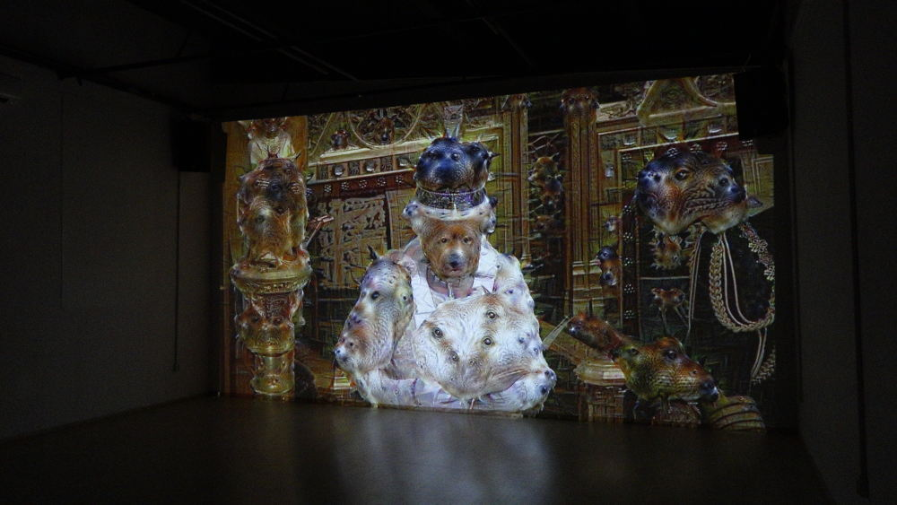

Video installation, 720p, 8:18 loop, dimension
varies
Idea and realisation Przemyslaw Sanecki / 2015-16
Queen of the Dream maps reality of British politics into a world of dream and tries to debate a relationship between old political regimes and established technocracies.
Deep machine learning gained a substantial media attention. Most recently defeating top human players in an ancient game Go revived fears of creeping end of human supremacy. However, at the other end of the spectrum a pop culture is remaking the sixties as a result of Google's Deep Dream*.
Hippy aestheticism of images dreamed by machines
obscures the fact that the very technologies are
essential for ruling classes to maintain the current
power balance. Cognitive technologies are a steam
engine of the present, not blotters of LSD.
As for that, Queen of the Dream
restores a counter-cultural potential of
hallucinations.
* https://en.wikipedia.org/wiki/DeepDream
Acknowledgment: For the purpose of a non-commercial research, data mining and criticism the work utilises a fair amount of State Opening of Parliament 2015 by UK Parliament (Standard YouTube License)